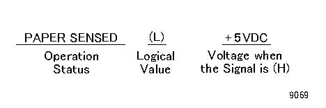
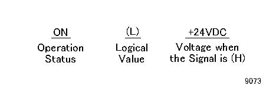

7.3.1.3. 信号 名称 
信号 名称 Structure
输入 组件

(图 1) 9069
The 示例 指示 该 当...时 纸张 is sensed, the 信号 电平 is (L) 和 该 当...时 纸张 不是 sensed, the 信号 电平 is (H) 使用 电压 +5VDC.
输出 组件

(图 2) 9073
The 示例 指示 该 当...时 the 组件 is ON, the 信号 电平 is (L) 和 该 当...时 it is 关闭/脱离, the 信号 电平 is (H) 使用 电压 +24VDC.